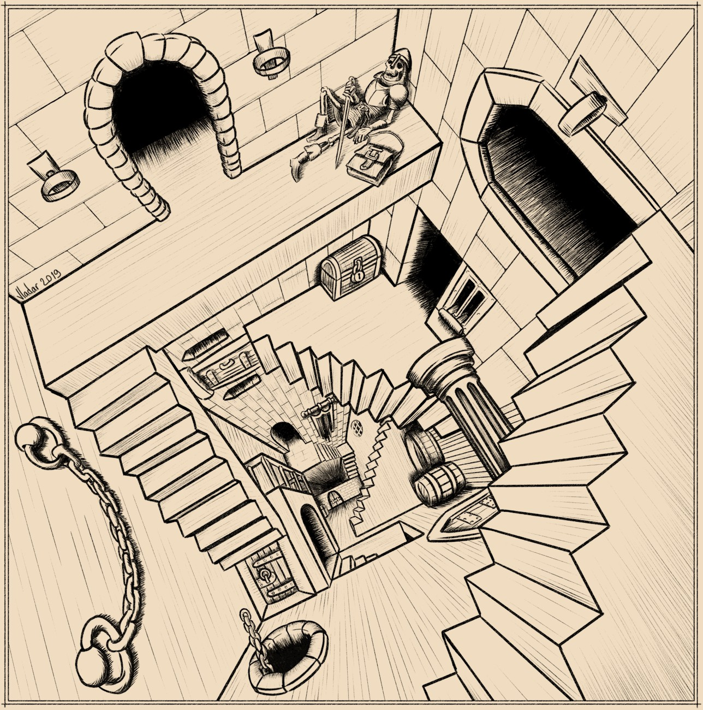

ItDR è un regolamento leggero per il gioco di ruolo a tema fantasy pensato per offrire una modalità di gioco semplificata. Raduna un po' di persone dal tuo giro di amicizie, prendete qualche dado e tuffatevi in un mondo di avventure sword & sorcery di vostra creazione!
In questo manuale troverai:
- Regole facili da imparare e quelle principali stanno su di una pagina
- Creazione rapida dei personaggi e passaggi di livello basati su tratti
- Combattimento veloce grazie all'assenza dei tiri per colpire
- Procedure basilari per la gestione dei possedimenti ai livelli alti
- Un sistema di magia con effetti degli incantesimi facili da ricordare
- Meccaniche di gioco semplici che consentono all'Arbitro di minimizzare la preparazione delle sessioni
- Una collezione di regole aggiuntive e alternative da mescolare e abbinare per un'esperienza di gioco ideale
- Tabelle per trarre spunti determinati in modo casuale e utilizzabili per la preparazione o anche nel corso delle sessioni
- Un piccolo bestiario con diversi mostri e animali selvaggi
Scarica l'ultima versione 
Basato su "Into the Dungeon: Playtest Edition" di Chris McDowall.
Maggiori info nel repository su GitHub